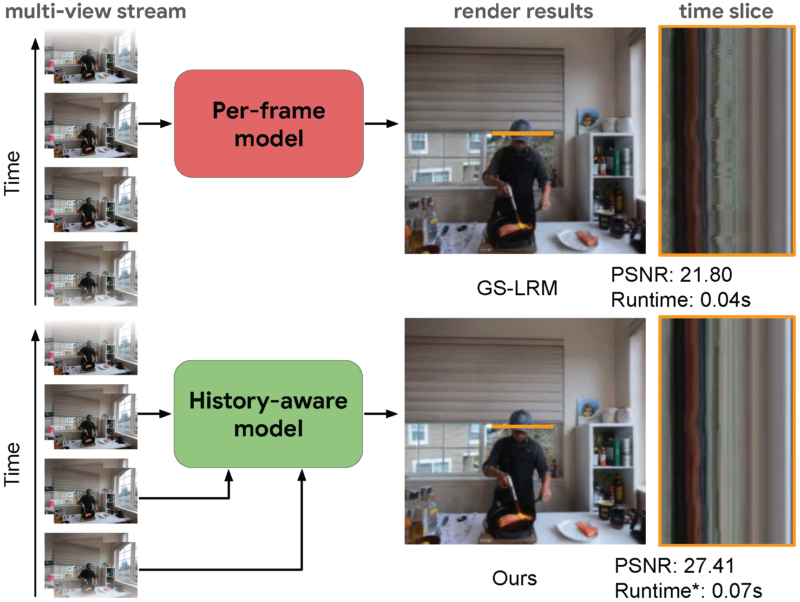

(Right) Per-frame reconstruction methods are prone to temporal flickering artifacts. In contrast, our history-aware model delivers high visual quality and temporal consistency, running at 15 fps with a 350ms delay on two-view inputs of 320 × 240 resolution.
History-Aware Streaming Reconstruction w/o Temporal Training